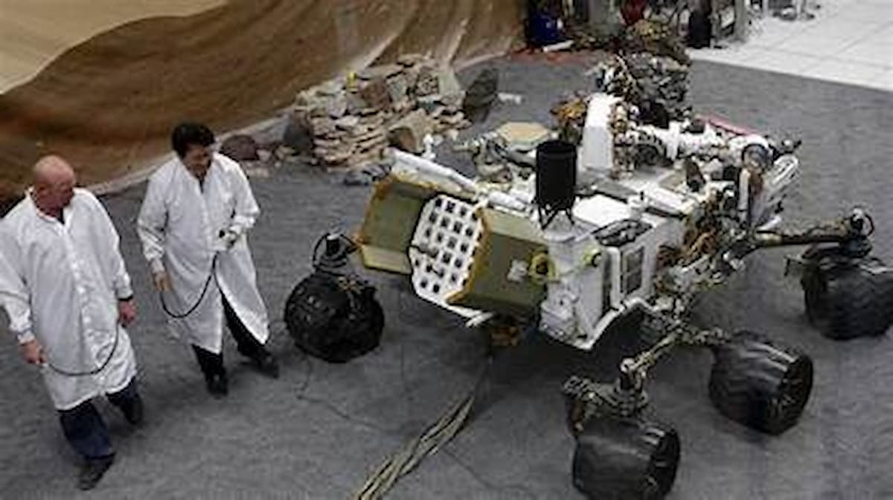

Sojourner
Mission: Mars Pathfinder
As the first rover to operate on another planet, Sojourner proved that mobile exploration of the Red Planet was possible.


Robotic Explorers on the Red Planet
From the first wheels on the ground to car-sized laboratories, NASA's Mars Exploration Program seeks to answer one fundamental question: Was Mars ever home to microbial life?
Mission: Mars Pathfinder
As the first rover to operate on another planet, Sojourner proved that mobile exploration of the Red Planet was possible.
Mission: Mars Science Laboratory
A car-sized rover designed to explore Gale Crater and assess whether Mars ever had an environment able to support life.
